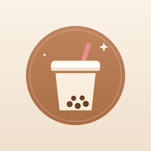
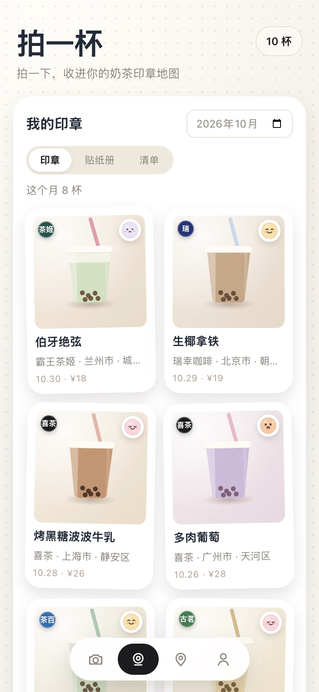
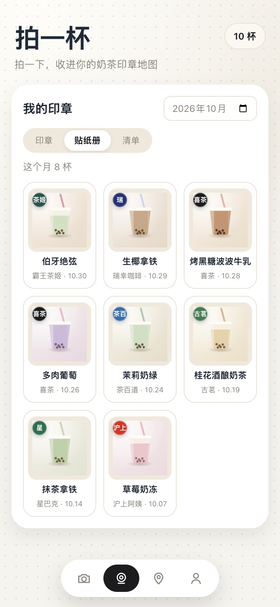
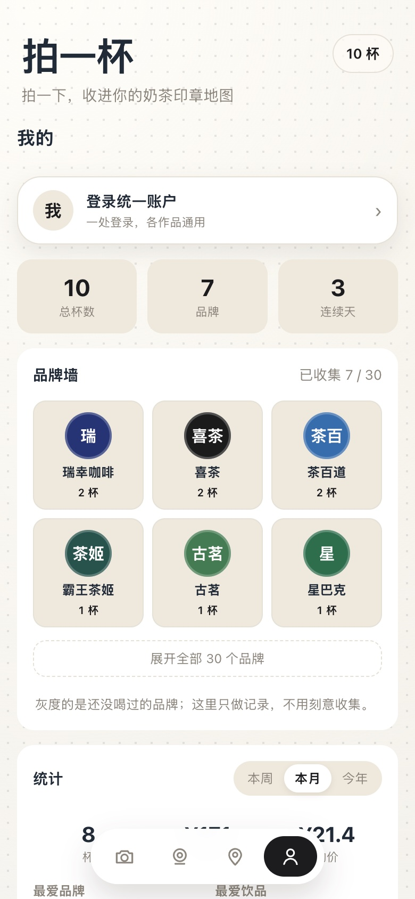

AI 认饮品名
拍完自动填好名字，30 个主流品牌的常见款还会对齐成标准写法，不用自己敲字。

拍一杯 milk tea log 打开拍一杯how it works
整个过程不到十秒。能被记住的那一杯，才算真的喝过。
对着杯子拍一张。AI 顺手认下饮品名和品牌，认不出来也没关系，自己写就行。
照片当场压成一枚贴纸印章。心情、糖度、价格、想说的话，全都是选填。
印章按月份排好，一枚一枚盖到地图上。翻回去看，都是你这一年喝过的日子。
screens
下面都是真机截图，只把里面的名字和照片换成了演示数据。



features
不强迫你填表。你只拍照，剩下的它自己算。
拍完自动填好名字，30 个主流品牌的常见款还会对齐成标准写法，不用自己敲字。
每个牌子喝过几杯，一屏看完。你的「本命品牌」会自己浮上来。
全国视角是一枚枚城市数字章，点开下钻看这城喝过哪几杯，放大到街区就是小图钉。
六个手绘小表情，点一下就好。不用想文案，情绪也留得住。
按住说 60 秒。能转文字就转成文字，不能就留一段原声，随记录一起存着。
一键生成 1080×1440 的竖图，照片、名字、糖度、第几杯都排好了，发圈刚好。
不额外填表。常点品牌、常喝时段、均价、最常心情，都从已有记录里自己算出来。
纸感贴纸、暖棕展台、彩色卡片、极简留白。心情变了，册子也能换个皮肤。
map
缩放时先看到城市：一枚数字章，写着这座城市被你喝过几杯。 点进去，是那年那天的照片、饮品和心情； 再放大，就落到具体的街道，一枚小图钉就是一杯。
themes
同一批记录，换一种翻法。切了会记住，下次还是你喜欢的样子。
米白纸面、微微的手工胶带感，最像一本贴纸册。
深棕底当展台，奶茶和印章被聚光灯照着，晚上看很舒服。
一枚杯一张彩卡，翻起来花花绿绿，像小时候的贴画本。
去掉所有装饰，只剩照片和名字。安静、干净。
privacy
照片、印章、语音都存你自己手机的本地存储里，不上传、不建你的档案。 登录是可选的，统一账户只给一个身份编号，看不到你喝了什么。 换手机时，可以自己导出一份备份带走。
读一遍隐私政策 →faq